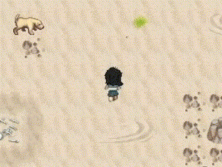
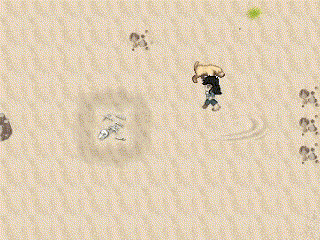
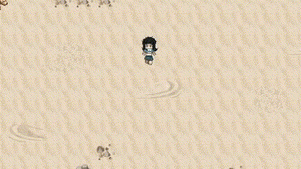

¡Estos controles fueron seleccionados cuidadosamente para ofrecerte la mayor comodidad posible, asegurando que tengas una experiencia de juego fluida y espectacular! 🚀🌊
★ Movimiento del Personaje
W, A, S, D:
Mueve a tu personaje en las cuatro direcciones (arriba, izquierda, abajo, derecha) mientras exploras el mundo submarino.

★ Interacción con el Entorno
Enter:
Interactúa con los NPCs, objetos y elementos del mundo. Descubre secretos del océano y entabla conversaciones con sus habitantes.

Mouse (cursor):
Usa el mouse para explorar el entorno, ver pistas, y recoger objetos extra o mejoras que te ayudarán en tu aventura.

★ Selección e Interfaces
Mouse (cursor):
Navega por los menús e interfaces, selecciona opciones y administra tu inventario. Usa el botón izquierdo para confirmar acciones.
★ Alternativa al Mouse
W y S:
En la interfaz de charla con NPCs o cualquier otro menú (como el menú principal), puedes usar W para mover el cursor hacia arriba y S para moverlo hacia abajo entre las opciones.
Enter:
Selecciona la opción deseada con Enter. Esta funcionalidad también está disponible en todas las interfaces del juego, permitiendo una navegación sin necesidad de usar el mouse.